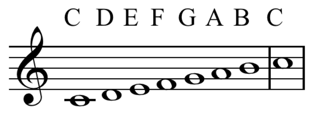
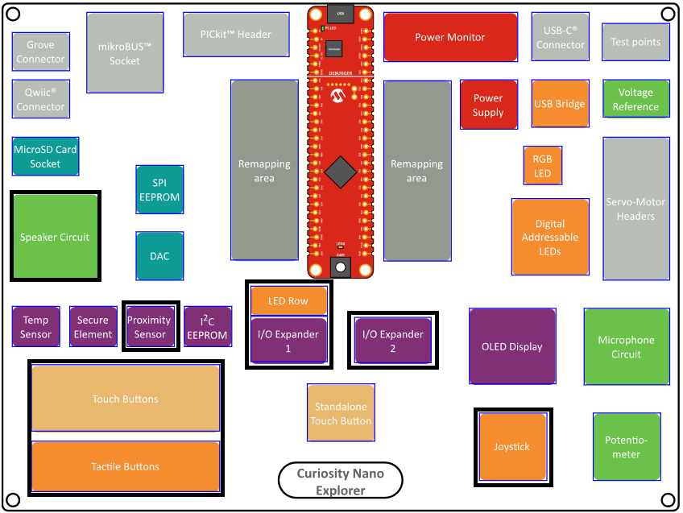
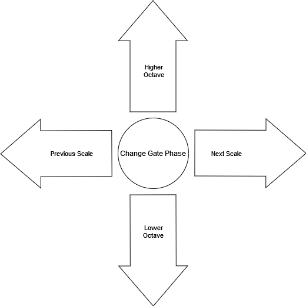
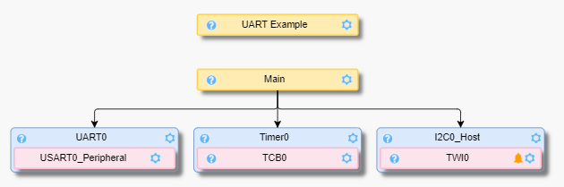
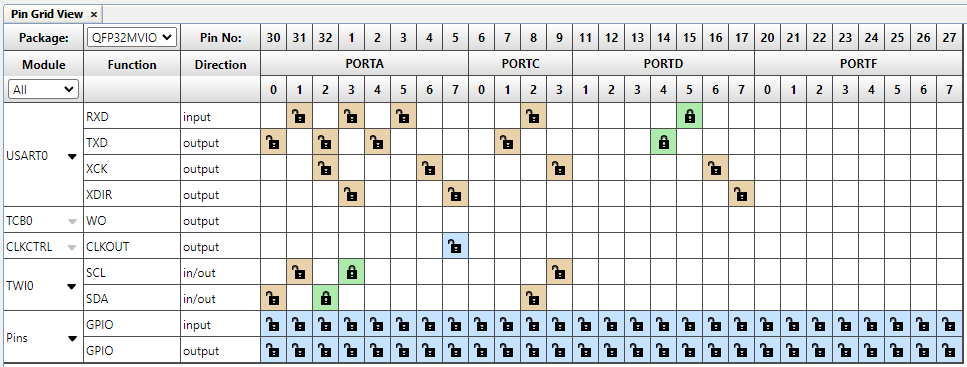
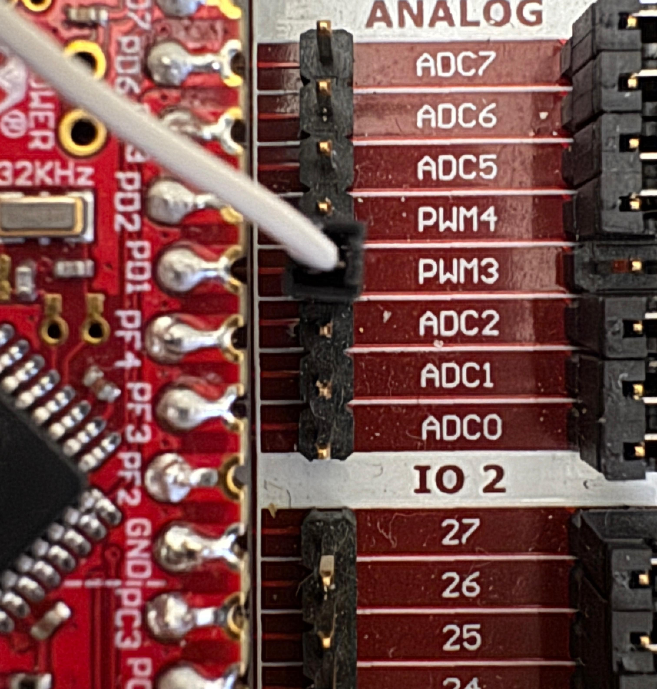

Lab 6: Project - Theremin
Required Materials
This lab requires the following materials:
- Computer with MPLAB X IDE installed
- AVR64DD32 Curiosity Nano with EV58G97A Curiosity Explorer
This lab was designed to work with Windows operating systems. For other operating systems, steps may differ from what is listed in this lab manual.
Learning Objectives
This is the final lab of the MPLAB X IDE manuals where you will apply knowledge and skills acquired from previous labs to create a standalone project. To successfully complete this project, you should be able to:
- Navigate the MPLAB X IDE including how to create and build a new project, use MCC to add and configure project resources, understand the basic structure of an MPLAB X project
- Understand the basics of embedded programming including microcontroller architecture, bit operations, and working in C
- Debug MPLAB X projects using the Data Visualizer with UART, software breakpoints, and IO View
- Understand I2C and how to send and receive data from peripherals using the I2C Bus
- Understand Pulse Width Modulation, including waveform generation using timers
Introduction
For this lab, you will be creating a mock theremin on the Curiosity Explorer board. A theremin is an electronic instrument that uses the positioning of both hands to adjust the pitch and volume of the sound. The goal of this project is to be able to control the pitch of the theremin using the proximity sensor and alter properties of the sound using the joystick and capacitive touch buttons.
Background
A note is a widely recognized frequency typically used in Western musical notation (ie. C, D, E). Think of sounds produced by a piano or a flute. Notes can be high or low sounding so they are often differentiated by octave. All notes are scalar factors of their fundamental frequency, which is the most basic (commonly the lowest) form of the frequency produced by harmonic series. This means to go an octave up, you will only need to multiply the frequency by 2 or to go an octave down, divide the frequency by 2. A group of ascending notes that start and end with the same fundamental frequency is called a scale. The most common scales are major and minor scales, which make up the groundwork of Western music.

Besides pitch and loudness, waveforms also have a property called timbre. Timbre describes the shape of the sound in the way that a guitar and a piano sound distinct from each other. For adjusting the timbre in PWM, the duty cycle can be adjusted to change the shape of the waveform. Another technique that will be used in this project is gating, a form of rhythmic pulsing created by turning the sound on and off periodically. This effect can be achieved by playing a frequency for a certain amount of time, then halt the frequency for the same amount of time.
Specification
The project will use the following peripherals: Speaker Circuit, Proximity Sensor, Touch/Tactile Buttons, I/O Expander 1, I/O Expander 2, and Joystick.

Speaker Circuit
- Using PWM and Timer Counter A, the speaker circuit shall produce audible sounds from frequencies (see Lab 5) without the DAC.
- The notes.h files will be provided so that you will not need to find the frequencies yourself.
- You will need a jumper cable going from a PWM pin to the AMP IN pin on the speaker circuit (see Lab 5).
Proximity Sensor (VCNL4200)
- The proximity sensor shall constantly scan for input and translate the input to a musical note (See Lab 4).
- Remember that communication with the VCNL4200 is 16-bits instead of 8-bits.
Touch/Tactile Buttons
- Each touch button should change the timbre of the resulting sound when pressed, how the buttons affect the timbre (duty cycle) is up to you.
- You will need to configure the touch buttons through IO Expander 2
I/O Expander 1 (Amber LEDs)
- The Amber LEDs should display positionally either the note being played, the current scale being used, or the current octave that is being played in (see Lab 3).
- Positional meaning lowest to highest in note and octave; For example, if the note D was being played in the C scale, then the 2nd from the left LED would light up. For scale, the LEDs each represent a unique scale.
- The Amber LEDs should change when either the note, octave, or scale changes (depending on what you pick).
- Use the TWI0 Interface from I2C_Host to write to the Amber LEDs.

I/O Expander 2 (Joystick & Touch Buttons)
- The joystick shall change the octave, scale, and gating phase using the four directions and the pressed functionality.
- The Joystick behavior can be handled as discrete inputs or as a continuous input with a timeout using Timer.
- Use the TWI0 Interface from I2C_Host to read the state of the joystick and touch buttons.
Project Setup
- Open MPLAB X IDE and go to File → New Project. Select Application Project(s) for Projects. Change the device to AVR64DD32 and change the tool to Curiosity Explorer. Select the latest version of the XC8 compiler. Type "lab6_theremin" under Project Name and click Finish to create the project.
- On the MPLAB X IDE Toolbar, click the MCC icon to open the Code Configurator. Using the Device Resources tab, add the following resources:
- Timer – select TCB0, leave everything else as default
- UART – select USART0, then change the requested baud rate to 115200.
- UART Example – select UART Write String and set it to Polled.
- I2C_Host - select TWI0, and enable read and write interrupts.

- Enable global interrupts in the Interrupt Manager module located in the Application Builder.
- In the Pin View Grid, lock PORT D pin 5 for USART0 RXD and lock PORT D pin 4 for USART0 TXD.
- In the Project Resources tab, click Generate to create the project files.

Lab Implementation
In this lab, we will be interacting with different on board peripherals. To output frequencies to the speaker, connect a jumper cable from PD1 to the amplifier input as shown in Lab 5.


Code Organization
We will organize our code into several modules:
1. Main Program Structure
The main program includes necessary headers and declares functions:
#include "mcc_generated_files/system/system.h"
#include <string.h>
#include <stdio.h>
#include "mcp23008.h"
#include "systimer.h"
#include "pwm.h"
#include "pwm_notes.h"
#include "scales.h"
#include "vcnl4200.h"
#include <math.h>
void UART_WriteString(const char *message);
void read_sensor_and_play(int scale_index, float duty_cycle, float gate);
char uart_str[80];2. Variable Initialization
Key variables are set up to manage the program's behavior:
int current_scale_index = 0;
uint32_t curr_gate = 0;
float duty_cycle = 0.50f;
float current_divisor = 1.0;3. Main Loop Implementation
The main loop handles user input and sound generation:
int main(void) {
SYSTEM_Initialize();
pwm_init();
vcnl_init();
mcp23008_init();
while (1) {
mcp23008_read_ioex2();
// Handle joystick input
if (mcp23008_is_joystick_left()) {
current_scale_index = (current_scale_index == 0) ?
(NUM_SCALES - 1) : (current_scale_index - 1);
}
else if (mcp23008_is_joystick_right()) {
current_scale_index = (current_scale_index + 1) % NUM_SCALES;
}
else if (mcp23008_is_joystick_up()) {
current_divisor /= 2.0f; // Higher octave
}
else if (mcp23008_is_joystick_down()) {
current_divisor *= 2.0f; // Lower octave
}
else if (mcp23008_is_joystick_pressed()) {
switch (curr_gate) {
case 0: curr_gate = 50; break;
case 50: curr_gate = 100; break;
case 100: curr_gate = 200; break;
case 200: curr_gate = 0; break;
}
}
// Handle button presses for duty cycle
if (mcp23008_is_sw1_pressed()) {
duty_cycle = 0.50; // Medium duty cycle
}
else if (mcp23008_is_sw2_pressed()) {
duty_cycle = 0.25; // Low duty cycle
}
else if (mcp23008_is_sw3_pressed()) {
duty_cycle = 0.05; // Very low duty cycle
}
read_sensor_and_play(current_scale_index, duty_cycle, curr_gate);
}
}4. Sensor Reading and Sound Generation
The read_sensor_and_play() function handles sensor reading and sound generation:
void read_sensor_and_play(int scale_index, float duty_cycle, float gate) {
static bool gate_on = false;
Scale chosen_scale = scale_bank[scale_index];
int scale_length = chosen_scale.length;
uint16_t proximity = vcnl_read_ps();
// Map proximity value to scale index (logarithmic mapping)
float log_value = 0.f * logf((float)proximity) - 1.f;
int index = (int)roundf(log_value);
index = index < 0 ? 0 : (index >= scale_length ? scale_length - 1 : index);
// Update LEDs to show current note
mcp23008_write_leds(1 << (7 - index < 0 ? 0 : 7 - index));
// Handle gating effect
if (gate != 0) {
if (gate_on) {
pwm_play_tone(0, duty_cycle); // Silence
} else {
pwm_play_tone(chosen_scale.notes[index] / current_divisor, duty_cycle);
}
if (read_timer2() > gate) {
gate_on = !gate_on;
clear_timer2();
}
} else {
// Continuous play without gating
pwm_play_tone(chosen_scale.notes[index] / current_divisor, duty_cycle);
}
}PWM Implementation
Create pwm.h and pwm.c files to handle sound generation:
pwm.h
#ifndef PWM_H
#define PWM_H
#ifdef __cplusplus
extern "C" {
#endif
void pwm_init();
void pwm_play_tone(float frequency, float duty_cycle);
#ifdef __cplusplus
}
#endif
#endif /* PWM_H */pwm.c
#include "mcc_generated_files/system/system.h"
#include "pwm.h"
#define CLK_PER 4000000UL
#define PRESCALER 4
void pwm_init(){
PORTD.DIRSET = PIN1_bm;
PORTMUX.TCAROUTEA = PORTMUX_TCA0_PORTD_gc;
TCA0.SINGLE.CTRLB = TCA_SINGLE_CMP1EN_bm | TCA_SINGLE_WGMODE_DSBOTTOM_gc;
TCA0.SINGLE.CTRLA = TCA_SINGLE_CLKSEL_DIV4_gc | TCA_SINGLE_ENABLE_bm;
}
void pwm_play_tone(float frequency, float duty_cycle){
if(frequency <= 0) {
// Silence
TCA0.SINGLE.CMP1BUF = 0;
return;
}
float period = (float)CLK_PER / (2.0f * PRESCALER * frequency);
TCA0.SINGLE.PERBUF = (unsigned int)(period);
TCA0.SINGLE.CMP1BUF = (unsigned int)(period * duty_cycle);
}Musical Notes and Scales
Create pwm_notes.h for musical note frequencies:
#ifndef PWM_NOTES_H
#define PWM_NOTES_H
// Octave 4 notes (middle octave)
#define NOTE_C4 261.63f
#define NOTE_CS4 277.18f
#define NOTE_D4 293.66f
#define NOTE_DS4 311.13f
#define NOTE_E4 329.63f
#define NOTE_F4 349.23f
#define NOTE_FS4 369.99f
#define NOTE_G4 392.00f
#define NOTE_GS4 415.30f
#define NOTE_A4 440.00f
#define NOTE_AS4 466.16f
#define NOTE_B4 493.88f
// Octave 5 notes
#define NOTE_C5 523.25f
#define NOTE_CS5 554.37f
// ... (continue for other octaves as needed)
#endif /* PWM_NOTES_H */Create scales.h for musical scale definitions:
#ifndef SCALES_H
#define SCALES_H
typedef struct {
const char* name;
const float* notes;
int length;
} Scale;
// C Major scale
static const float c_major_scale[] = {
NOTE_C4, NOTE_D4, NOTE_E4, NOTE_F4,
NOTE_G4, NOTE_A4, NOTE_B4, NOTE_C5
};
// A Minor scale
static const float a_minor_scale[] = {
NOTE_A4, NOTE_B4, NOTE_C5, NOTE_D5,
NOTE_E5, NOTE_F5, NOTE_G5, NOTE_A5
};
// Add more scales as needed
static const Scale scale_bank[] = {
{"C Major", c_major_scale, sizeof(c_major_scale)/sizeof(float)},
{"A Minor", a_minor_scale, sizeof(a_minor_scale)/sizeof(float)}
// Add more scales here
};
#define NUM_SCALES (sizeof(scale_bank)/sizeof(Scale))
#endif /* SCALES_H */I2C Communication with MCP23008
Create mcp23008.h and mcp23008.c for I/O expander communication:
mcp23008.h
#ifndef MCP23008_H
#define MCP23008_H
#include <stdbool.h>
// IO Expander addresses
#define IOEX1_ADDR 0x20
#define IOEX2_ADDR 0x21
// Function prototypes
void mcp23008_init(void);
void mcp23008_read_ioex2(void);
void mcp23008_write_leds(uint8_t leds);
bool mcp23008_is_joystick_left(void);
bool mcp23008_is_joystick_right(void);
bool mcp23008_is_joystick_up(void);
bool mcp23008_is_joystick_down(void);
bool mcp23008_is_joystick_pressed(void);
bool mcp23008_is_sw1_pressed(void);
bool mcp23008_is_sw2_pressed(void);
bool mcp23008_is_sw3_pressed(void);
#endif /* MCP23008_H */mcp23008.c
#include "mcp23008.h"
#include "mcc_generated_files/system/system.h"
// Current state of IO Expander 2 (joystick and buttons)
static uint8_t ioex2_state = 0;
void mcp23008_init(void) {
// Initialize I2C and configure IO expanders
// Set direction registers, pull-ups, etc.
}
void mcp23008_read_ioex2(void) {
// Read current state of IO Expander 2
uint8_t data[1];
I2C0_Read(IOEX2_ADDR, 0x09, data, 1); // Read GPIO register
ioex2_state = data[0];
}
void mcp23008_write_leds(uint8_t leds) {
// Write to IO Expander 1 LED outputs
uint8_t data[2] = {0x09, leds}; // GPIO register address and data
I2C0_Write(IOEX1_ADDR, data, 2);
}
// Joystick and button status functions
bool mcp23008_is_joystick_left(void) { return !(ioex2_state & 0x01); }
bool mcp23008_is_joystick_right(void) { return !(ioex2_state & 0x02); }
bool mcp23008_is_joystick_up(void) { return !(ioex2_state & 0x04); }
bool mcp23008_is_joystick_down(void) { return !(ioex2_state & 0x08); }
bool mcp23008_is_joystick_pressed(void) { return !(ioex2_state & 0x10); }
bool mcp23008_is_sw1_pressed(void) { return !(ioex2_state & 0x20); }
bool mcp23008_is_sw2_pressed(void) { return !(ioex2_state & 0x40); }
bool mcp23008_is_sw3_pressed(void) { return !(ioex2_state & 0x80); }Proximity Sensor Implementation
Create vcnl4200.h and vcnl4200.c for proximity sensor communication:
vcnl4200.h
#ifndef VCNL4200_H
#define VCNL4200_H
#include <stdint.h>
// VCNL4200 I2C address
#define VCNL4200_ADDR 0x51
// Register addresses
#define VCNL4200_PS_CONF1 0x03
#define VCNL4200_PS_DATA 0x08
// Function prototypes
void vcnl_init(void);
uint16_t vcnl_read_ps(void);
#endif /* VCNL4200_H */vcnl4200.c
#include "vcnl4200.h"
#include "mcc_generated_files/system/system.h"
void vcnl_init(void) {
// Configure proximity sensor
uint8_t conf[3] = {VCNL4200_PS_CONF1, 0x00, 0x08}; // Default configuration
I2C0_Write(VCNL4200_ADDR, conf, 3);
}
uint16_t vcnl_read_ps(void) {
uint8_t data[2];
I2C0_Read(VCNL4200_ADDR, VCNL4200_PS_DATA, data, 2);
return (data[1] << 8) | data[0]; // Combine MSB and LSB
}Hints and Tips
- Modular Code: Break your project into separate modules (pwm.c, mcp23008.c, vcnl4200.c) for better organization.
- Testing: Test each component individually before integrating:
- Verify PWM sound generation works with fixed frequencies
- Test I2C communication with IO expanders
- Check proximity sensor readings
- Debugging:
- Use UART to print debug messages (sensor values, current scale, etc.)
- Set breakpoints in MPLAB X to examine variable values
- Use the Data Visualizer to monitor sensor inputs
- Performance:
- Minimize delays in the main loop for responsive controls
- Use timer interrupts for time-critical operations if needed
Resources
- Curiosity Explorer User Guide: https://ww1.microchip.com/downloads/aemDocuments/documents/MCU08/ProductDocuments/UserGuides/CNANO-Explorer-UserGuide-DS50003716.pdf
- AVR64DD32 Preliminary Datasheet: https://ww1.microchip.com/downloads/en/DeviceDoc/AVR64DD32-28-Prelim-DataSheet-DS40002315A.pdf
- MCP23008 Datasheet: https://ww1.microchip.com/downloads/en/DeviceDoc/21919e.pdf
- VCNL4200 (Proximity Sensor) Datasheet: https://www.vishay.com/docs/84430/vcnl4200.pdf
- List of Piano Scales: https://www.pianoscales.org/major.html